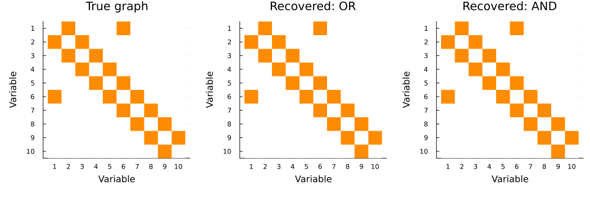

Gaussian graph: neighborhood selection
A network of measurements asks which pairs remain related after accounting for the other variables. Marginal correlations alone cannot answer that question: two variables may be correlated through an intermediate one. Under a Gaussian model, sparse conditional relationships can be estimated by regressing each variable on all the others.

The conditional-independence graph of a Gaussian vector x ~ N(0, Σ) has an edge between variables j and k when the entry Ω[j, k] of the precision matrix Ω = Σ⁻¹ is nonzero: the two variables are dependent given all the others. Neighborhood selection by Meinshausen and Bühlmann (2006, doi:10.1214/009053606000000281) estimates the neighbors of each variable j by a lasso regression of column j on the other columns,
\[\hat b^{(j)} \in \arg\min_{b \in \mathbb{R}^{p-1}} \; \frac{1}{2n}\|X_j - X_{-j} b\|_2^2 + \lambda_j \|b\|_1,\]
and puts the variables with a nonzero coefficient into the neighborhood of j. This page runs p independent lasso fits, one per variable, with CDSolver on a dense Vector. Each fit uses (1/n) * LeastSquaresLoss(X_j, X₋ⱼ), because ProximalBase's LeastSquaresLoss(y, X) is ‖y − Xb‖²/2, together with NormL1(λ_j). This is the lasso row of Supported problems; the page adds no solver support. For the lasso on its own, see Lasso.
The converged flag of a CDSolver run reports that the largest coordinate change of a pass fell below a threshold. It is not an optimality certificate, and no statement on this page rests on it. The statements about the fits rest on a residual of the optimality conditions and on an objective, both computed from the data of each regression (see Sparsity and an optimality check), and on a control with a known solution.
using LinearAlgebra, Random, ProximalBase, ProximalSolversIndex bookkeeping
The regression for variable j uses the columns others = [1:j-1; j+1:p]. Coefficient k of that regression belongs to the original variable others[k], so the position of a coefficient is not the number of its variable once k ≥ j. For p = 5 and j = 3, others = [1, 2, 4, 5] and coefficient 3 belongs to variable 4. For j = 1, coefficient 1 belongs to variable 2. For j = p, coefficient k belongs to variable k.
neighbors(j, p) = [1:j-1; j+1:p]
@assert neighbors(3, 5) == [1, 2, 4, 5] && neighbors(3, 5)[3] == 4
@assert neighbors(1, 5) == [2, 3, 4, 5] && neighbors(1, 5)[1] == 2
@assert neighbors(5, 5) == [1, 2, 3, 4]fit_node solves the lasso of column j of X on the other columns at the level λ, from a fresh zero vector, and returns the coefficients with the numbers of their variables. Cyclic order and no momentum make the run reproducible. tol = 1e-12 is the tolerance parameter of the default relative change test: the threshold is tol times the response scale sqrt(sum(abs2, y) / n), and each coordinate change is multiplied by the scale of its column. Both scales are 1 up to rounding for the standardized data below. The KKT residual of each solution is compared below with 1e-8 λ; on this data the threshold gives a residual several orders of magnitude below that, and the printed maximum shows by how much. The check, not the threshold, decides whether a fit is accepted.
function fit_node(X, j, λ)
n, p = size(X)
others = neighbors(j, p)
y, Xo = X[:, j], X[:, others]
b = zeros(p - 1)
result = solve!(b, (1 / n) * LeastSquaresLoss(y, Xo), NormL1(λ),
CDSolver(order = :cyclic, momentum = false, tol = 1e-12))
(b = b, others = others, y = y, Xo = Xo, result = result)
endfit_node (generic function with 1 method)The independent checks use only the data of one regression. The objective is ‖y − Xo b‖²/(2n) + λ‖b‖₁. The residual of the optimality condition 0 ∈ grad + λ ∂‖b‖₁, for grad = Xoᵀ(Xo b − y)/n, is |grad_k + λ sign(b_k)| at a nonzero coefficient and max(|grad_k| − λ, 0) at a zero coefficient. It is zero at a minimizer, and a point with a zero residual is a minimizer because the objective is convex. The level λmax = ‖Xoᵀ y‖∞ / n is the smallest level at which b = 0 is a minimizer.
objective(Xo, y, λ, b) = sum(abs2, y - Xo * b) / (2 * length(y)) + λ * sum(abs, b)
function node_kkt_residual(Xo, y, λ, b)
grad = Xo' * (Xo * b - y) / length(y)
maximum(iszero(b[k]) ? max(abs(grad[k]) - λ, 0.0) : abs(grad[k] + λ * sign(b[k]))
for k in eachindex(b))
end
lambda_max(Xo, y) = norm(Xo' * y, Inf) / length(y)lambda_max (generic function with 1 method)A control with a known solution
When the columns of Xo are orthogonal with XoᵀXo / n = I, the lasso solution is the soft threshold S(Xoᵀy / n, λ) coordinatewise, with S(z, λ) = sign(z) max(|z| − λ, 0). The control below builds such columns for p = 6 variables and the node j = 3, so the coefficients map to the variables others = [1, 2, 4, 5, 6], with variables on both sides of the omitted one. The columns are √n times the factor Q of a thin QR decomposition. The response is Xo β plus noise that is projected orthogonal to the columns, so that Xoᵀy / n = β up to rounding. Here β = [0.05, 0.8, 0, −0.5, 0] and λ = 0.1; the soft threshold is [0, 0.7, 0, −0.4, 0], which is nonzero at the variables 2 and 5. The entry 0.05 is below λ and is thresholded to zero. The matrix passed to fit_node has the response in column 3 and Xo in the other columns, as for the real data below.
let rng = Xoshiro(7), n = 50, p = 6, j = 3, λ = 0.1
others = neighbors(j, p)
Xo = sqrt(n) * Matrix(qr(randn(rng, n, p - 1)).Q)
@assert norm(Xo' * Xo / n - I, Inf) <= 1e-12
β = [0.05, 0.8, 0.0, -0.5, 0.0]
e = randn(rng, n)
e -= Xo * (Xo' * e / n)
Xc = zeros(n, p)
Xc[:, others] = Xo
Xc[:, j] = Xo * β + e
fit = fit_node(Xc, j, λ)
soft = sign.(β) .* max.(abs.(β) .- λ, 0.0)
@assert isapprox(fit.b, soft; atol = 1e-9)
@assert findall(!iszero, fit.b) == [2, 4]
@assert fit.others[findall(!iszero, fit.b)] == [2, 5]
@assert node_kkt_residual(fit.Xo, fit.y, λ, fit.b) <= 1e-9
println("control: coefficients ", round.(fit.b, digits = 6), " belong to variables ", fit.others[findall(!iszero, fit.b)])
end;control: coefficients [0.0, 0.7, 0.0, -0.4, 0.0] belong to variables [2, 5]The model and the data
The precision matrix has a chain 1 − 2 − ⋯ − p with Ω[j, j+1] = −0.3, one more edge (1, 6) with the same value, and a unit diagonal. A symmetric matrix with a positive diagonal that strictly dominates the absolute sum of the other entries in its row is positive definite; here the largest such row sum is 0.9 (row 6), against the diagonal 1. The script also checks that the Cholesky factorization of Ω succeeds. The true edges are the pairs j < k with Ω[j, k] ≠ 0, each counted once.
p, n = 10, 400
Ω = Matrix(1.0I, p, p)
for j in 1:p-1
Ω[j, j+1] = Ω[j+1, j] = -0.3
end
Ω[1, 6] = Ω[6, 1] = -0.3
@assert issymmetric(Ω)
C = cholesky(Symmetric(Ω)) # throws unless Ω is positive definite
Σ = Matrix(Symmetric(inv(Symmetric(Ω))))
@assert issymmetric(Σ)
true_edges = [(j, k) for j in 1:p for k in j+1:p if Ω[j, k] != 0]
println("p = ", p, ", n = ", n, ", true edges = ", length(true_edges), ": ", true_edges)p = 10, n = 400, true edges = 10: [(1, 2), (1, 6), (2, 3), (3, 4), (4, 5), (5, 6), (6, 7), (7, 8), (8, 9), (9, 10)]Sampling. With the Cholesky factor Ω = L Lᵀ, the vector x = L⁻ᵀ ε for ε ~ N(0, I) has covariance L⁻ᵀ L⁻¹ = (L Lᵀ)⁻¹ = Ω⁻¹ = Σ. The rows of X are n such draws, X = (L' \ Z')' for an n × p matrix Z of standard normals. The check on the convention is that L⁻ᵀ (L⁻ᵀ)ᵀ equals Σ up to rounding. The sample covariance of the centered columns is also compared with Σ, loosely: an entry of it has standard deviation about √((Σ[j, j] Σ[k, k] + Σ[j, k]²) / n), and each entry must be within five of them.
L = C.L
Linv_t = inv(L')
@assert norm(Linv_t * Linv_t' - Σ) <= 1e-12 * norm(Σ)
rng = Xoshiro(2026)
X = Matrix((L' \ randn(rng, n, p)')')
colmeans(M) = vec(sum(M, dims = 1)) / size(M, 1)
X .-= colmeans(X)'
S = X' * X / n
cov_sd = sqrt.((diag(Σ) * diag(Σ)' .+ Σ .^ 2) ./ n)
@assert all(abs.(S .- Σ) .<= 5 .* cov_sd)
println("largest |S - Σ| entry = ", maximum(abs, S .- Σ), ", largest sd of an entry = ", maximum(cov_sd))largest |S - Σ| entry = 0.20543395062389846, largest sd of an entry = 0.10133057094827193Gaussian edges are nonzero entries of the precision matrix, not of the covariance. Here the graph has 10 edges, while Σ = Ω⁻¹ has no zero entry: Ω is a symmetric positive definite matrix with nonpositive off-diagonal entries and a connected graph, so all entries of Σ are positive. Two variables that are not joined by an edge, such as 1 and 3, are still correlated.
@assert minimum(Σ[j, k] for j in 1:p for k in 1:p if j != k) > 0
println("Σ[1, 3] = ", Σ[1, 3], " although Ω[1, 3] = ", Ω[1, 3])Σ[1, 3] = 0.159009907141427 although Ω[1, 3] = 0.0The penalty and the standardization
Each column is scaled to mean(x²) = 1 after centering (the 1/n convention, not 1/(n−1)). The coefficients of the regressions are then on the standardized scale, and the support of a regression is the support on that scale. The fits and the checks below use this matrix. The same level λ = √(2 log(p) / n) is used for all p variables; this is the usual order of the level in the theory of the lasso and is not tuned with the true graph. Because of the standardization, λmax,j is the largest absolute correlation of column j with the other columns.
X ./= sqrt.(sum(abs2, X, dims = 1) / n)
@assert all(isapprox.(sum(abs2, X, dims = 1) / n, 1.0))
lambda = sqrt(2 * log(p) / n)
println("λ = ", lambda)λ = 0.10729830131446737Nodewise fits
One fit per variable, each from its own zero vector. The checks follow the fits. The reported objective of each run is compared with the objective computed from the data of its regression, and the KKT residual is compared with 1e-8 λ. The objective tolerance is a relative difference of 1e-10, which is large against the rounding of the sums involved. The printed maxima show the margins of both.
fits = [fit_node(X, j, lambda) for j in 1:p]
kkt = [node_kkt_residual(f.Xo, f.y, lambda, f.b) for f in fits]
objdiff = [abs(f.result.minimum - objective(f.Xo, f.y, lambda, f.b)) /
abs(objective(f.Xo, f.y, lambda, f.b)) for f in fits]
println("largest KKT residual / λ = ", maximum(kkt) / lambda,
"; largest relative objective difference = ", maximum(objdiff),
"; most passes = ", maximum(f.result.passes for f in fits),
"; all converged = ", all(f.result.converged for f in fits))
for (j, f) in enumerate(fits)
@assert length(f.b) == p - 1 && all(isfinite, f.b) && f.result.minimizer === f.b
@assert f.others == [1:j-1; j+1:p]
@assert kkt[j] <= 1e-8 * lambda
@assert objdiff[j] <= 1e-10
endlargest KKT residual / λ = 1.138177689792567e-14; largest relative objective difference = 2.574893033011772e-16; most passes = 12; all converged = trueThe level at which a regression selects nothing is λmax,j. Each fit is repeated at 1.01 λmax,j, where the coefficients are all zero, and at 0.9 λmax,j, where at least one is nonzero, because b = 0 violates the optimality condition below λmax,j. The factor 1.01 keeps the solver's rounding in the gradient from the boundary case.
ratios = Float64[]
for (j, f) in enumerate(fits)
lmax = lambda_max(f.Xo, f.y)
push!(ratios, lambda / lmax)
above, below = fit_node(X, j, 1.01 * lmax), fit_node(X, j, 0.9 * lmax)
@assert all(iszero, above.b)
@assert any(!iszero, below.b)
@assert node_kkt_residual(below.Xo, below.y, 0.9 * lmax, below.b) <= 1e-8 * 0.9 * lmax
end
println("λ / λmax,j over the nodes: from ", minimum(ratios), " to ", maximum(ratios))λ / λmax,j over the nodes: from 0.2475451978914093 to 0.3405331935263691From coefficients to graphs
The directed selection matrix has A[j, others[k]] = (b̂ₖ ≠ 0) for the fit of node j. The diagonal of A stays false because j is not in others. The test b̂ₖ ≠ 0 uses the solver's own zeros: a coordinate update of CDSolver soft-thresholds, so coefficients that the penalty removes are zero, and no reporting threshold is applied. Two undirected graphs follow. The OR rule puts the edge (j, k) in when A[j, k] or A[k, j]; the AND rule requires both.
A = falses(p, p)
B = zeros(p, p) # B[j, others[k]] = b̂ₖ of node j
for (j, f) in enumerate(fits)
A[j, f.others] .= f.b .!= 0
B[j, f.others] .= f.b
end
@assert !any(A[j, j] for j in 1:p) && all(iszero, diag(B))
@assert A == (B .!= 0) && sum(A) == sum(count(!iszero, f.b) for f in fits)
@assert all(norm(X * B[j, :] - f.Xo * f.b) <= 1e-10 for (j, f) in enumerate(fits))
G_or, G_and = A .| A', A .& A'
@assert G_or == G_or' && G_and == G_and' && !any(G_or[j, j] for j in 1:p)
@assert all(G_or[j, k] for j in 1:p for k in 1:p if G_and[j, k]) # AND ⊆ OR
edges(G) = [(j, k) for j in 1:p for k in j+1:p if G[j, k]]
or_edges, and_edges = edges(G_or), edges(G_and)
@assert issubset(and_edges, or_edges)
@assert sum(G_or) == 2 * length(or_edges) && sum(G_and) == 2 * length(and_edges)Comparison with the truth, each undirected edge counted once.
function compare(found)
tp, fp, fn = length(intersect(found, true_edges)), length(setdiff(found, true_edges)),
length(setdiff(true_edges, found))
@assert tp + fp == length(found) && tp + fn == length(true_edges)
(edges = length(found), tp = tp, fp = fp, fn = fn,
precision = tp / (tp + fp), recall = tp / (tp + fn))
end
for (name, found) in (("OR ", or_edges), ("AND", and_edges))
println(name, " ", compare(found))
endOR (edges = 10, tp = 10, fp = 0, fn = 0, precision = 1.0, recall = 1.0)
AND (edges = 10, tp = 10, fp = 0, fn = 0, precision = 1.0, recall = 1.0)A small adjacency picture of the OR graph: # an edge found and true, + an edge found that is not in the truth, - a true edge that was missed, . no edge in either, / the diagonal.
for j in 1:p
println(join((j == k ? "/" : G_or[j, k] && Ω[j, k] != 0 ? "#" : G_or[j, k] ? "+" :
Ω[j, k] != 0 ? "-" : "." for k in 1:p), " "))
end
println("neighbors found per node: ", [(j, f.others[findall(!iszero, f.b)]) for (j, f) in enumerate(fits)])
println("pairs selected by one node only (OR but not AND): ", setdiff(or_edges, and_edges))/ # . . . # . . . .
# / # . . . . . . .
. # / # . . . . . .
. . # / # . . . . .
. . . # / # . . . .
# . . . # / # . . .
. . . . . # / # . .
. . . . . . # / # .
. . . . . . . # / #
. . . . . . . . # /
neighbors found per node: [(1, [2, 6]), (2, [1, 3]), (3, [2, 4]), (4, [3, 5]), (5, [4, 6]), (6, [1, 5, 7]), (7, [6, 8]), (8, [7, 9]), (9, [8, 10]), (10, [9])]
pairs selected by one node only (OR but not AND): Tuple{Int64, Int64}[]The numbers above describe one simulated data set. The checks on this page do not assert that the graph is recovered: whether an edge is found depends on the sample, on n, on the strength of the edge and on λ.
Reading the figure
Orange squares are edges; white squares are absent edges. The blank diagonal excludes self-edges, and the symmetry repeats each undirected edge twice. The OR rule retains an edge if either node selects the other; AND requires agreement. Comparing both with the true adjacency shows the sensitivity to this choice. These are adjacency matrices, not precision-matrix estimates, and their entries carry no estimated edge strength.
using Plots
true_adjacency = [j != k && !iszero(Ω[j, k]) for j in 1:p, k in 1:p]
graph_panels = [heatmap(1:p, 1:p, Float64.(graph); title=title,
color=cgrad([:white, :darkorange]), clims=(0, 1), colorbar=false, aspect_ratio=1,
yflip=true, xlabel="Variable", ylabel="Variable", xticks=1:p, yticks=1:p)
for (title, graph) in (("True graph", true_adjacency), ("Recovered: OR", G_or),
("Recovered: AND", G_and))]
plot(graph_panels...; layout=(1, 3), size=(1050, 360),
left_margin=5Plots.mm, bottom_margin=5Plots.mm)
savefig("nodewise_gaussian_graph.svg")
nothingLimitations
- One seed, one level. The edge counts above are one outcome. Recovery of the graph by neighborhood selection needs conditions on the model and a level
λof the right order; this page does not selectλby cross-validation or stability selection and does not study how the counts vary over data sets. - The result is a graph. The coefficients of the different regressions are not combined into an estimate of
Ω; a matrix assembled from them need not be symmetric or positive definite. Direct estimation of a sparse precision matrix by the graphical lasso is a different estimator, shown in Graphical lasso. - The
pregressions are solved one after another, each from zero, with no warm start along a path of levels. The design matrices are denseFloat64arrays. The solves are fast at this size; no timing claim is made for largerp. convergedis the change test of the solver. The accepted fits are the ones whose KKT residual is small, computed here from the data.
What we learned
Gaussian neighborhood selection converts conditional-dependence learning into ordinary lasso fits with careful variable indexing. Symmetrizing those selections gives an OR or AND graph. Objective and KKT checks establish accuracy of the regressions; the sampling model, sample size and penalty determine how well their edges represent the population graph.
The figure is generated from this script during the documentation build. Run the script alone for the same seeded calculations and checks without loading Plots.